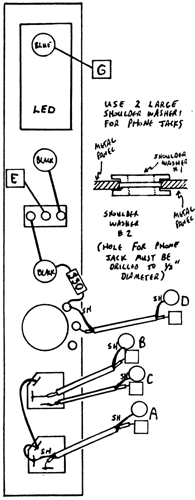

|
PREAMP DETECTORParts for Kit
 Special large shoulder washers are used in this kit for the phone Jacks. This insulates them from the panel, and provides superior grounding of the low level audio signals at the Inputs. Shielded wire is used, and in the diagram, the shielded strands are labelled with a small "SH". Both square and circle type pads are used for connections with the shielded wire. Be certain to get the proper wire (shield or center conductor) to the appropriate pad. Pads on the boards for these connections are in pairs, a circle and a square pad. In all cases the shield is connected to the circular pad and the center conductor is connected to the square pad on the PC board. The letters for the pads are placed between the circle and square pair on the PC board. Keep leads as short as possible for the shield strands so that they do not short out against other traces on the PC board. The shield strands of the two wires that go to the HI-Z input jack are not connected except at the PC board. Clip the strands off, and wrap with a small piece of electrical tape or clip the strands back about 3/4" and gently pull the outer insulation over the shield strands to prevent contact with other conductors. Check to make sure that the Preamp and Envelope Detector work using a microphone or other low level input at the phone jacks. Most studio quality microphones should be plugged into the LO-Z input. Instrument pick-ups will normally work best at the HI-Z input. With the COUPLER ON, the preamp signal appears at the PREAMP OUT and is sent to the Envelope Detector. Level variations should be seen on the LED, and the ENV OUT can be used to control VCA's and other VC modules. With the Coupler set to OFF, the Preamp is disconnected from the Detector and you may use any signal from the synthesizer or external line level source to be detected. The Preamp Level knob will not completely turn the Preamp all the way off. This knob is a Gain Control, and the gain should be adjusted to get the best amplification of low level signals without overloading. The HI-Z input is often useful for receiving signals from other equipment such as home-type tape decks which usually have signals lower than standard line levels.
|